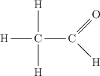
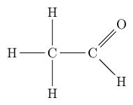

Org-Mode, LaTeX, MathJax and HTML
Table of Contents
Org-Mode and MathJax
Documentation to use and export LaTeX math formulas (and formulas from extensions) from Org-Mode to HTML is sparse.
The most modern way of including formulas in HTML is by the use of MathJax. Org-Mode has support for MathJax 2.7: https://orgmode.org/manual/LaTeX-fragments.html.
It is a simple as including #+OPTIONS: tex: t in an org file.
Then, we can freely use LaTeX math formulas.
#+OPTIONS: tex:t
$$x=\frac{-b\pm\sqrt{b^2-4ac}}{2a}$$
And this is the result:
\[x=\frac{-b\pm\sqrt{b^2-4ac}}{2a}\]
MathJax Extensions
Things get more complicated when trying to use formulas from LaTeX extensions.
One good extension when doing chemistry equations is mhchem. This can also be
used alongside MathJax, but we have to signal it that we want to use the
extension.
Org-mode documentation shows a way of “importing” an extension:, through the following snippet:
#+HTML_MATHJAX: cancel.js noErrors.js
This is supposed to import “cancel” and “noErrors”. For some reason, it wasn’t
importing any of the extensions. One way of doing this would be overriding
org-html-mathjax-template with the same value but with the extension key added.
But this solution is sub-optimal. Changing this configuration shouldn’t ever be
needed.
Fortunately, through the Org-Mode mailing list, an alternative was found: https://lists.gnu.org/archive/html/emacs-orgmode/2017-11/msg00030.html. All that is needed is the following line on the top of the org file:
#+HTML: \(\require{mhchem}\)
This is an indication to MathJax to import the required extension and is
converted to a <script> when the page is loading. The string might appear in
the page for a fraction of a second. This is the best solution that could be
found at this time, even though I have been having mixed results with it.
Here is an example:
#+HTML: \(\require{mhchem}\)
$$\ce{Hg^2+ ->[I-] HgI2->[I-] [Hg^{II}I4]^2-}$$
And this is the result:
\[\ce{Hg^2+ ->[I-] HgI2->[I-] [Hg^{II}I4]^2-}\]
There are other extensions that are not supported by MathJax and need an
alternative.
For instance, another chemistry related LaTeX library that can be used is chemfig,
which uses tikz internally. Since both of these libraries do not have
extensions to MathJax, a way of displaying it in HTML is generating a PNG
(dvipng or imagemagick) or an SVG (dvisvgm). I prefer ImageMagick
because of its easier to use.
#+latex_header: \usepackage{chemfig}
#+OPTIONS: tex:imagemagick
$$\chemfig{H-C(-[2]H)(-[6]H)-C(-[7]H)=[1]O}$$
This is the result:

Export Settings
The result is far from good because the background may not match the websites
background, foreground the same and the image is trimmed without any padding.
To change how the image is generated, the ImageMagick command executed by
Org-Mode should be changed. The variable with configurations for ImageMagick,
dvipng and dvisvgm is org-preview-latex-process-alist.
The default command for ImageMagick is convert -density %D -trim -antialias
%f -quality 100 %O.
It is trimming the image completely, without adding any border. This can be
changed into: convert -density %D -trim -border 10 -bordercolor white
-antialias %f -quality 100 %O. The result is as follows:

MathJax & Unsupported Extensions
Because of available and unavailable extensions for MathJax, there may be the
need to use both MathJax compatible formulas and images. Users may try to set
#+OPTIONS: tex:t, insert formulas and then set #+OPTIONS: tex:imagemagick
for images. But Org-Mode will only interpret the last option that has been set
when exporting (imagemagick). Because of this, all formulas will be images,
instead of having a mix of both. This seems to be a limitation of Org-Mode and
the workaround that is being used in this HTML page is setting OPTIONS to use
t (MathJax) and import manually the images for the other formulas that are not
compatible.